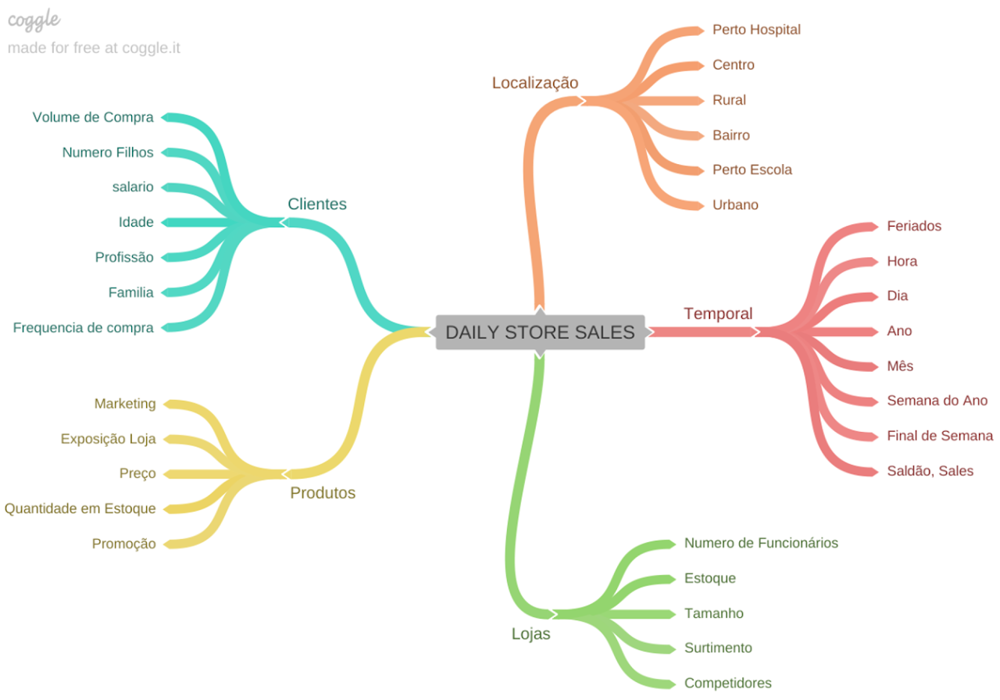
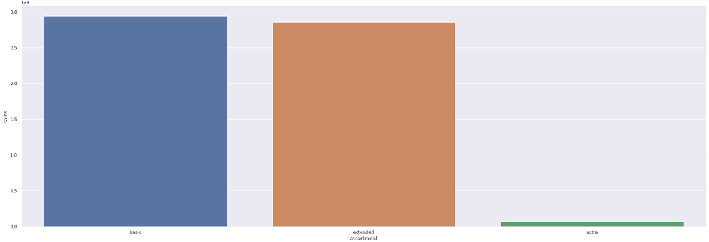
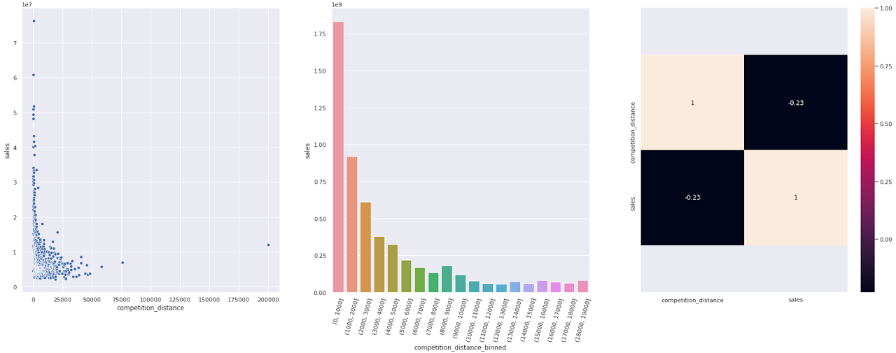
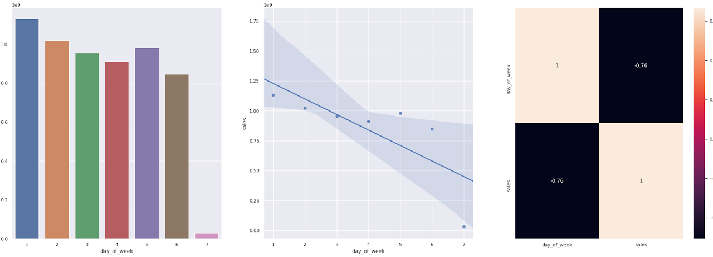
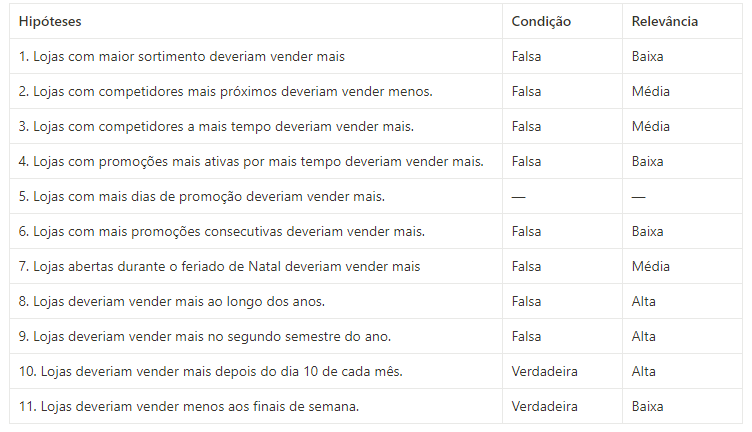
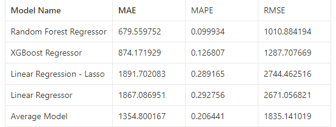
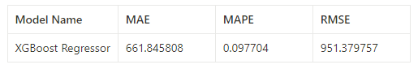
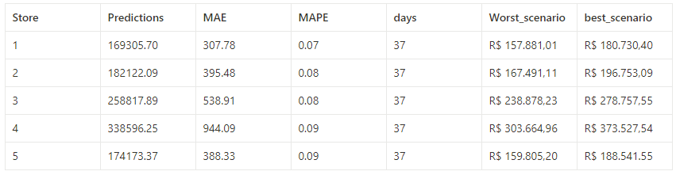
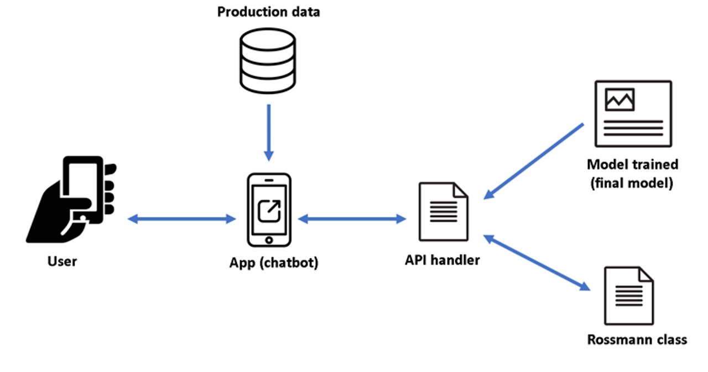

Previsão de Vendas (Forecast) — Rede de Drogarias Rossmann

Introdução
Solução para o desafio do Kaggle Rossmann Store Sales. Trata-se de um projeto end-to-end de Data Science, implementando uma regressão adaptada para séries temporais. Foram desenvolvidos quatro modelos para prever as vendas das lojas nas próximas seis semanas, com as previsões disponibilizadas via Bot no Telegram.
Este projeto foi desenvolvido no ambiente de estudos da Comunidade DS, focando em execução e discussão de projetos.
Plano de Desenvolvimento (CRISP-DM)
A solução foi realizada usando a metodologia CRISP-DM (Cross-Industry Standard Process for Data Mining), que transforma dados da empresa em conhecimento para auxiliar na tomada de decisões.
- Entendimento do Problema de Negócio
- Coleta e Limpeza dos Dados
- Análise Exploratória dos Dados
- Modelagem com Machine Learning, Validação Cruzada e Ajuste Fino
- Avaliação dos Resultados e Tradução para o Negócio
- Implantação do Modelo em Produção e Bot no Telegram
Entendimento do Problema de Negócio
O CEO solicitou ao time de dados uma solução mais assertiva para prever o faturamento de cada unidade nas próximas seis semanas, pois as previsões dos gerentes comprometiam a precisão dos resultados necessários para tomar decisões informadas sobre a reforma das lojas.
Objetivos do Projeto:
- Prever as vendas de cada loja nas próximas seis semanas.
- Fornecer ao CEO uma forma rápida de acessar essas previsões pelo celular, de qualquer lugar.
Base de Dados, Premissas e Limpeza
Premissas Adotadas:
- Lojas com valores de venda maior que 0 e dias em que as lojas foram fechadas foram retirados.
- Para as lojas sem 'Competition Distance', foi considerada a maior distância observada no conjunto de dados.
Limpeza e Preparação de Dados:
Nesta fase, garantimos que os dados estivessem corretos e prontos para uso, evitando problemas que afetem a precisão das previsões:
- Tratamento de Dados Faltantes (identificação e imputação de valores ausentes).
- Correção de Erros e Inconsistências (incluindo entradas incorretas ou duplicadas).
- Padronização e Transformação de Dados (ajustando formatos e convertendo variáveis).
Análise Exploratória dos Dados (EDA)
Criamos um mapa mental de hipóteses para guiar a exploração e entender a relevância das variáveis no aprendizado do modelo. Foram feitas análises univariadas, bivariadas e multivariadas.
Hipóteses Geradas (Exemplos):
- Lojas com maior sortimento devem vender mais.
- Lojas com concorrentes mais próximos devem vender menos.
- Lojas devem vender menos nos finais de semana.
Validação e Insights:
1. Hipótese: Lojas com maior sortimento deveriam vender mais.
Resultado: FALSA. Lojas com MAIOR SORTIMENTO vendem MENOS.
2. Hipótese: Lojas com competidores mais próximos deveriam vender menos.
Resultado: FALSA. Lojas com competidores MAIS PRÓXIMOS vendem MAIS.
3. Hipótese: Lojas deveriam vender menos aos finais de semana.
Resultado: VERDADEIRA. Lojas vendem MENOS aos finais de semana.
Tabela de Insights:
Modelagem com Machine Learning
Os dados foram preparados utilizando técnicas de Rescaling, Transformation (encodings e nature transformation) e Boruta para selecionar os melhores atributos, visando aprimorar a acurácia.
Comparação de Modelos:
Foram testados e treinados 5 modelos (Random Forest, XGBoost Regressor, Linear Regressor, Lasso e Average Model). O Average Model foi usado como base de comparação. A técnica de Cross Validation foi aplicada para garantir a performance real.
Avaliação e Tradução para o Negócio
Ajuste Fino (Fine Tunning) e Performance:
Com o algorítimo XGBoost escolhido, foi realizado o Hyperparameter Fine Tunning através do método Random Search para encontrar a performance final sobre os dados de teste.
Interpretação de Erros (Viés de Negócio):
Nesta etapa, demonstramos o resultado do projeto avaliando a performance do modelo sob um viés financeiro, para demonstrar o resultado financeiro que se pode esperar do modelo desenvolvido.
Implantação em Produção e Bot no Telegram
O modelo foi publicado em um ambiente de nuvem (Heroku) para que outras pessoas ou serviços pudessem consultar as previsões e usar os resultados para tomadas de decisões.
Esquema de Produção:
Bot no Telegram:
A etapa final foi criar um bot no aplicativo Telegram, permitindo consultar as previsões de vendas de qualquer loja, a qualquer momento e de qualquer lugar.